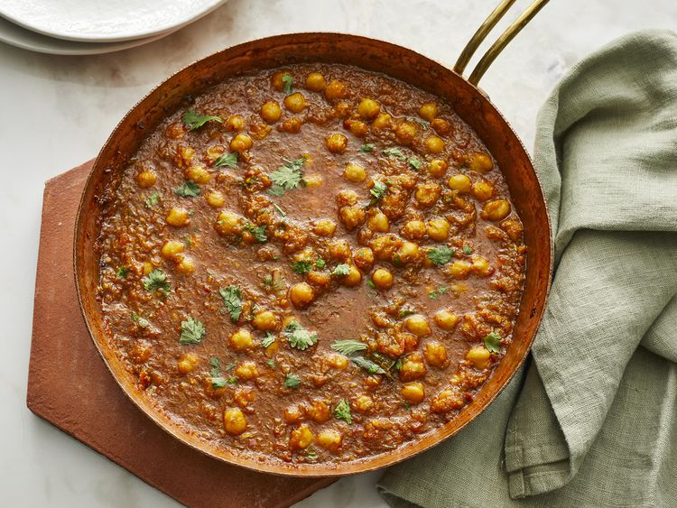

Chana Masala(Indian Chickpea Curry)

This Indian curry is made with selected spices and the aroma of the curry while preparation is enough to bring a smile on your face and increase your hunger! You can have it with bread(roti) or even cooked rice. If you are a person who likes it a bit spicy like the Odin, you will crave for this dish once in a while!
Ingredients
The quantity of the dish with below listed items can serve 2 servings.
- 1 onion, chopped
- 1 tomato, chopped
- 1(1-inch) piece fresh ginger, peeled & chopped
- 4 cloves garlic, chopped, or more to taste
- 1 green chile pepper, seeded and chopped (Optional)
- 3 tablespoons olive oil
- 2 fresh bay leaves
- 1 teaspoon chilli powder
- 1 teaspoon coriander powder
- 1 teaspoon garam masala
- 1/2 teaspoon turmeric powder
- 1 pinch salt to taste
- water, as needed
- 1(15 ounce) can chickpeas
- 1 teaspoon fresh cilantro leaves, for garnish, or more to taste
Steps
- Grind onion, tomato, ginger, garlic, and chile pepper together in a food processor into a paste.
- Heat olive oil in a large skillet over medium heat. Fry bay leaves in hot oil until fragrant, about 30 seconds. Pour the paste into the skillet and cook until the oil begins to separate from the mixture and is golden brown in color, 2 to 3 minutes. Season the mixture with chili powder, coriander, gram masala, turmeric, and salt; cook and stir until very hot, 2 to 3 minutes.
- Stir just enough water into the mixture to get a thick sauce; bring to a boil and stir chickpeas into the sauce. Reduce heat to medium and cook until the chickpeas are heated through, 5 to 7 minutes. Garnish with cilantro.
Home